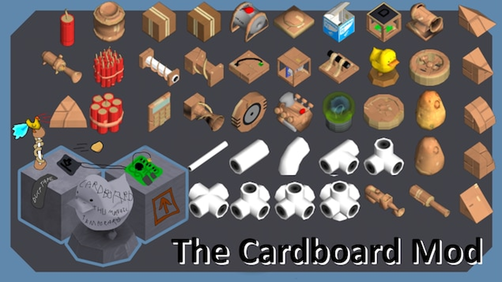

The Cardboard Mod for Scrap Mechanic

When the steamworkshop for Scrap Mechanic mods openend i wanted to make a mod for the game but i didn't have any ideas on what to make, so i made
this
(5/3/2017) based on my dog, it just adds a few blocks with custom textures.
Much later when the spudgun update came out, that added spudguns and cardboard, i wanted to make a mod that added cardboard versions of all blocks.
Because spudguns destroy cardboard blocks but only cardboard blocks.
This is the first time that i made models in blender and actually use them in something.
After multiple updates i added more and more until the mod is where it is today.
Maybe i'll come back to it someday and fix the bugs from the comment section, and make it so all the blocks can be crafted in survival mode.
Link
to the steamworkshop page.